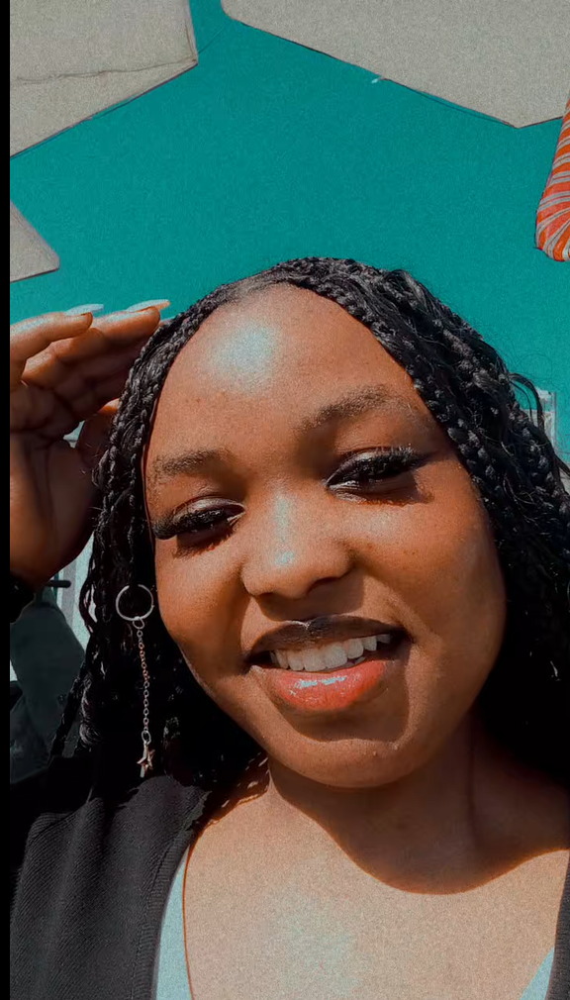

My name is Tolu Amos, I am a software developer with passion for creating different applications. I have experience in web development, mobile app development, and game development. I am always eager to learn new technologies and improve my skills. I am also a space science enthusiast who would love to work with NASA in the future to develop different technologies that would support new and groundbreaking discoveries in the world outside ours.
Information Science & Media Studies Portfolio
Here are some of the latest updates and news in the field of Information Science & Media Studies. Information Science is a rapidly evolving field that encompasses the study of how information is created, organized, and disseminated. It includes topics such as data management, information retrieval, and human-computer interaction. Media Studies, on the other hand, focuses on the analysis of media content and its impact on society. It explores areas such as media representation, media effects, and media literacy. Both fields are crucial in understanding the role of information and media in our modern world and how they shape our perceptions and interactions with the world around us. Information Scientists are what thw world needs to solve the problem of information overload and to make sense of the vast amount of data that is generated every day. They are responsible for developing new technologies and methods for managing and analyzing information, as well as for understanding how people interact with information and how it can be used to improve our lives. With the increasing importance of data in our society, the demand for Information Scientists is expected to continue to grow in the coming years.